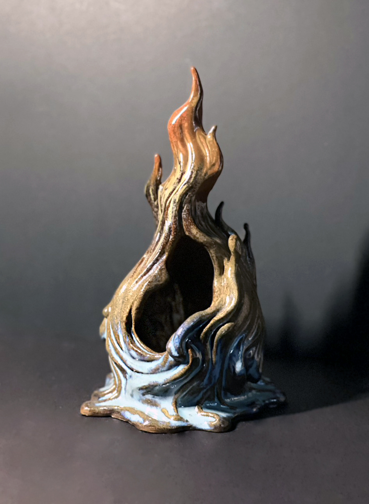
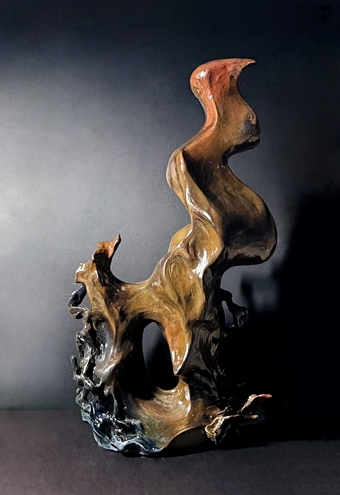
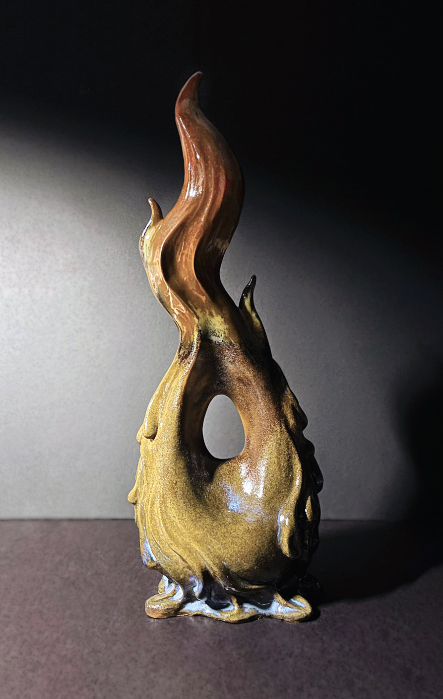
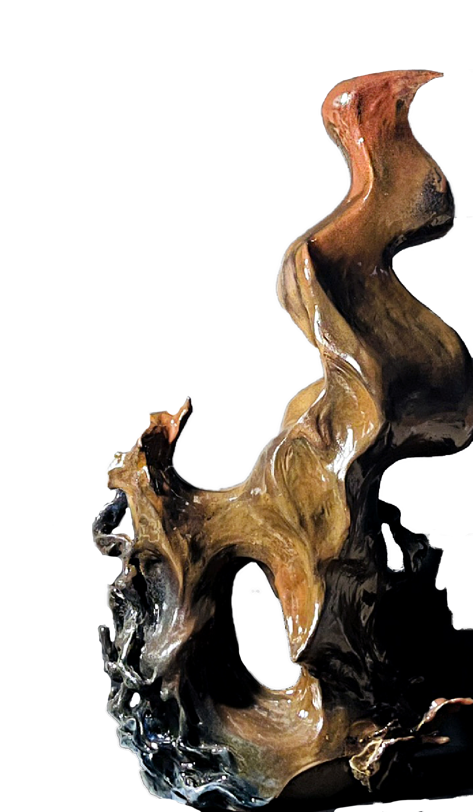
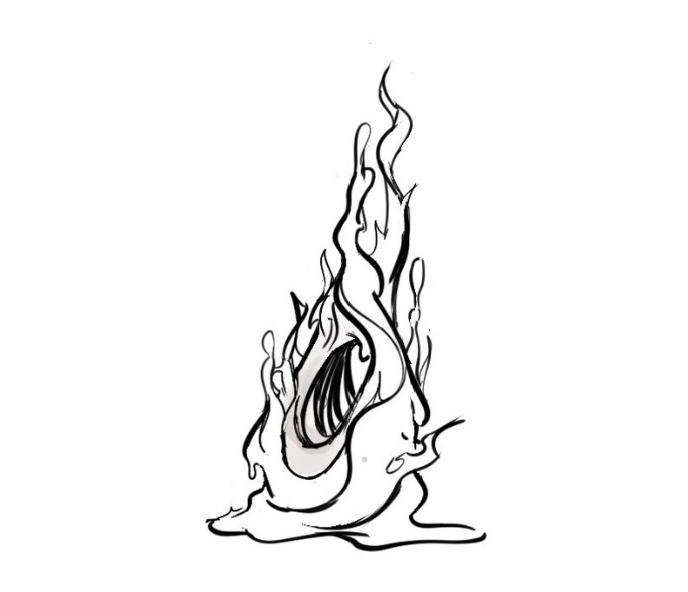
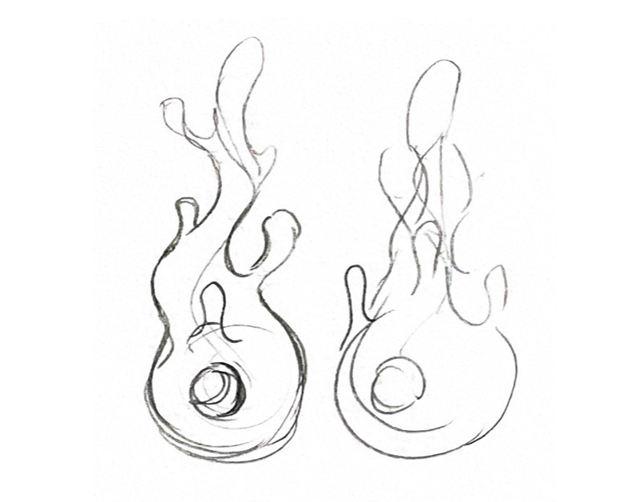

水與火兩種極端的元素，水塑形泥土，火在高溫中燒製成陶器， 這種矛盾卻又不可分割的關係，是我在製作陶的過程中深刻體會到的。
透過作品把水和火具現化融入陶中，探索兩種截然相反的力量如何在一件作品中共存、 對話，並最終凝固成一種既脆弱又永恆的形體。






參考水、火型態，以自然不規律的彎曲交融，具象呈現水流動與火燃燒的形體特徵。
以土條盤築法逐層堆疊，邊製作邊等待土體風乾定型。
水系造型需保留流動感而不垂塌，火系造型則強調向上竄升的張力，
兩者在同一件作品上的比例拿捏尤為關鍵。
Ceramics · 2025